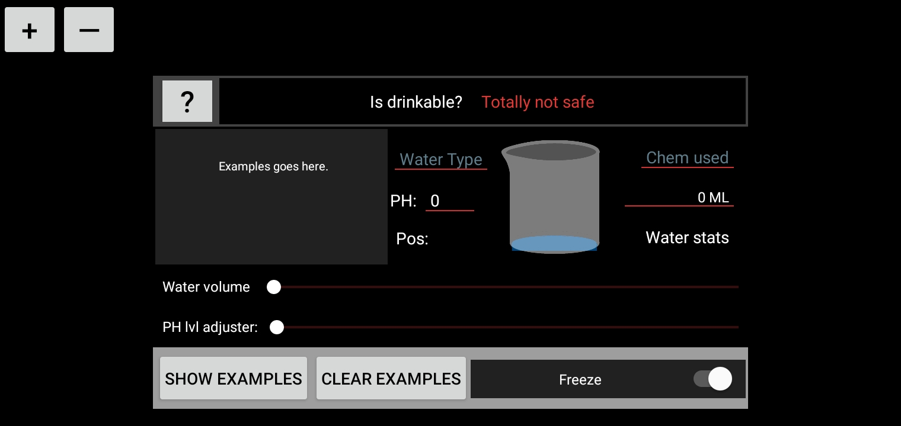

Introducing "AR Model" - Your Augmented Reality Water Analyzer!
Description:
AR Model is an innovative app that brings augmented reality and advanced analysis capabilities to the world of water assessment. Whether you're interested in monitoring water quality for personal use or scientific research, this app provides real-time information and interactive features to enhance your understanding.
Features:
Gyroscope System: Utilize the gyroscope functionality of your device for a seamless and immersive augmented reality experience.
User-Friendly Interface: With an intuitive user interface, navigating through various features and settings is effortless, ensuring a smooth user experience.
Real-Time Water Changes: Witness the dynamic changes in the water's properties, such as color variations or turbidity, through the AR view in real-time.
Drinkability Indicators: Instantly identify if the water is considered drinkable or not through clearly visible indicators based on established standards.
Built-In Bot (Beta): Access a beta version of our built-in bot for in-app explanations and detailed information regarding water characteristics. Interact and learn more about the water analysis field, all within the app.
Sliders for Value Adjustments: Fine-tune and adjust different parameters relating to water analysis, such as pH levels, temperature, or chemical concentrations, using convenient sliders.
Switches: Enable or disable specific features or settings with user-friendly switches, granting you control over the app's behavior.
Preview:

Status:
Explore the world of water analysis like never before with "AR Model." Download now and uncover the hidden secrets that lie within water samples using augmented reality technology!
Explore the world of water analysis like never before with "AR Model." Download now and uncover the hidden secrets that lie within water samples using augmented reality technology!